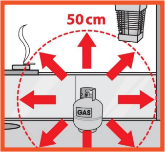
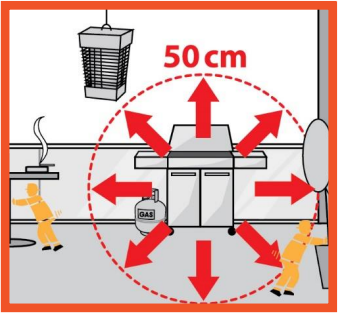
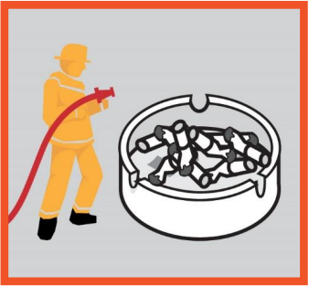
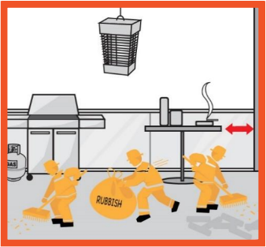
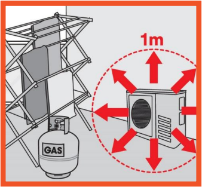
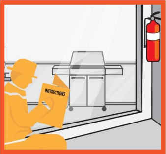

People living in high rise buildings need to think ahead and be prepared in the event of a
fire.
If you live in a high-rise building, It is important to know the fire safety features in your
building, to know what to do, and how to safely evacuate in the event of a fire.
Be Prepared
Familiarise yourself with your building’s evacuation plan; it will show you the way out
and where to assemble safely
Learn and practice your building’s evacuation plan with those who live with you
Learn to recognise the sound of your building’s fire alarm and understand how the
building’s fire safety systems work
Replace your smoke alarm every 10 years. FRV recommends photoelectric smoke
alarms with a 10-year lithium battery
Test your smoke alarm monthly by pressing the test button and gently dust around
the cover of your smoke alarm yearly
What to do in case of a fire
When alerted to a fire by the building’s fire alarm, respond immediately and alert
other people you live with
If smoke is present, get down low and stay out of the smoke as you exit the building
If it is safe, close doors behind you to slow the spread of fire and smoke
Alert other people on your way out
Do not use lifts. Follow the Exit signs and use fire isolated stairs. Close the fire doors
behind you to keep smoke and heat out of the stairwell
Alert other people on your way out
Do not use lifts. Follow the Exit signs and use fire isolated stairs. Close the fire doors
behind you to keep smoke and heat out of the stairwell
As per your building’s evacuation plan, once you are outside, go to the assembly
area
Once you are safely at your assembly area, call 000 (triple zero) and ask for FIRE
Do not re-enter the building until the all clear is given by the fire services
If you are unable to safely escape, stay inside your apartment and seal the doors to stop
smoke from getting inside. Call 000 (triple zero) and ask for evacuation assistance
FIRE SAFETY ON BALCONIES
Hover on image to check detailed explanation.

1.Always store gas bottles outside, upright and away from sources of heat.

2.When using a barbeque
maintain a safe distance of
50 cm from exterior walls,
anything else that could
burn, as well as any
electrical ignition sources.

3.Smokers should use heavy,
high-sided ashtrays (made
of glass, ceramic or metal)
to prevent them tipping over.
Always fully extinguish
cigarettes.

4.Remove rubbish, clutter
and flammable items from
balconies and keep furniture
away from exterior walls.

5.Keep goods, materials and
clothes a safe distance of 1
metre clear of air conditioner
units.

6.Keep a dry powder fire
extinguisher easily
accessible. Use only in
case of a small fire and if
you feel physically and
mentally able.